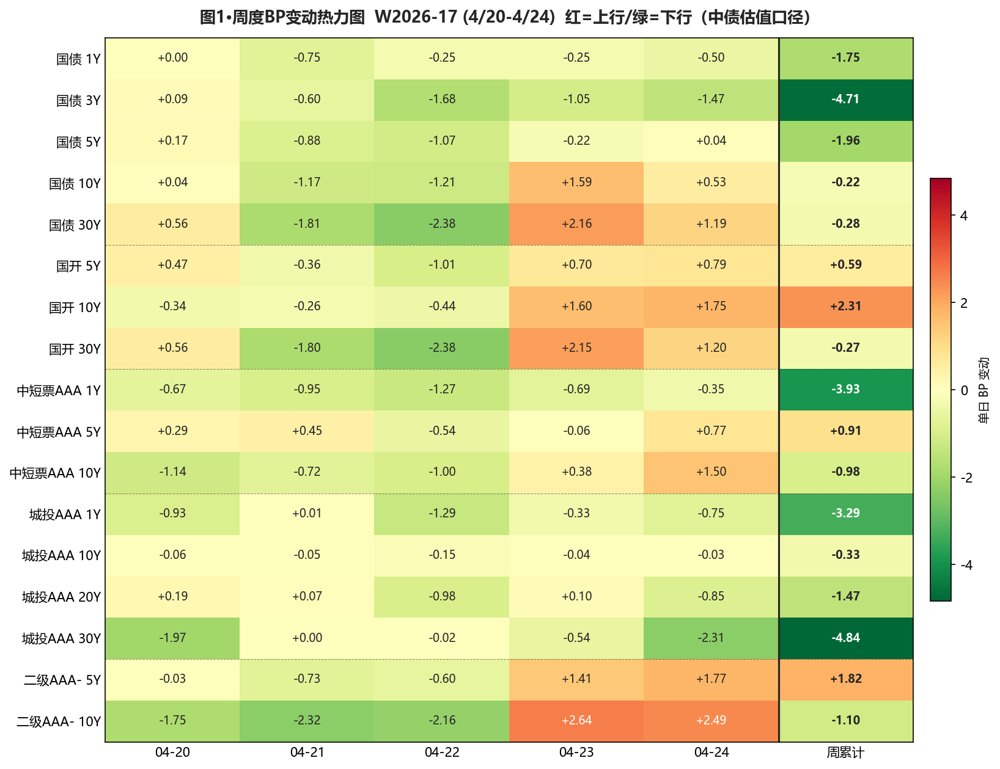
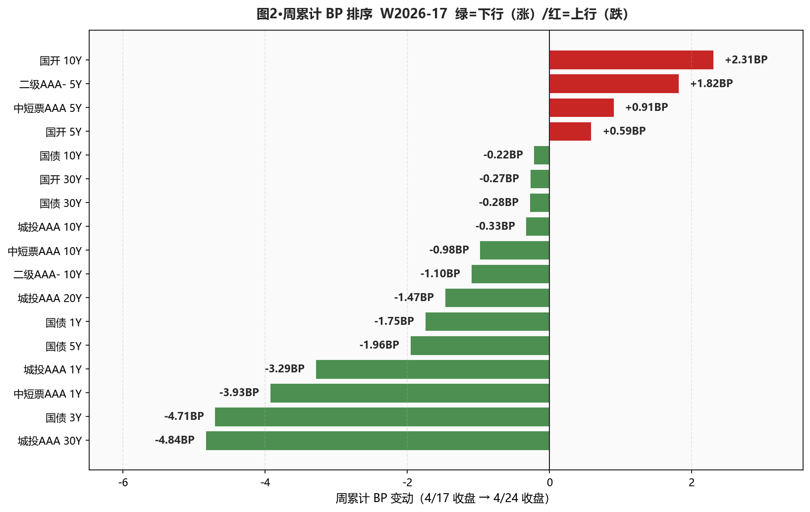

◆ 本周复盘 · 核心结论 ◆
市场定性："V型震荡 + 关键位确认 + 配置盘信号显现"三段式格局——周一周二长端利率延续上周补涨、4/22 跌破 1.75%/2.23% 关键位 → 4/23 单日反转 +1.6-2.2BP、阻力位被止盈盘集中收复 → 4/24 调整向 5Y 蔓延，但城投 AAA 30Y 连续两日独立抗跌（本周累计 -4.84BP，全市场最强），保险盘配置信号反复印证。
- ①关键位止盈节奏完美——本行 4/21 切止盈，比 4/22 跌破领先 1 天；4/23 反转后无追高接盘损失
- ②城投 30Y 全市场最强——周累计 -4.84BP；30Y-10Y 城投利差从 36.71BP 收窄到 32.20BP；4/23-4/24 连续两日逆势下行确认保险盘承接
- ③5Y 二永是本周最弱板块——5Y 二级 AAA- +1.82BP / 5Y 二级 AA+ +1.27BP / 5Y 永续 AAA- +0.48BP；4/23-4/24 集中承压
- ④口径背离值得关注——30Y 国债活跃券周累计 +2.85BP 显著弱于中债估值 -0.28BP；交易盘止盈幅度大于配置盘定价
- ⑤资金面持续宽松——DR007 周内最低 1.3202%（4/22）、低 OMO 最宽 7.98BP；R-DR007 最宽 7.19BP 后收敛到 4.45BP，未触发翻转信号 ③
- ⑥命中率自评：6 项中 4🟢 + 2🟡——两个 🟡 都指向同一类问题"过于谨慎、错过加仓窗口"（4/22 跌破后没及时切"加仓城投 30Y"+短端规避虽对但 1Y 续涨说明逻辑反常）
A详细数据 · 周度复盘
① 资金面 Wind EDB
| 指标 | 04-20 | 04-21 | 04-22 | 04-23 | 04-24 | 周累计BP (4/24 vs 4/20) |
|---|---|---|---|---|---|---|
| DR001 (%) | 1.2167 | 1.2170 | 1.2181 | 1.2171 | 1.2188 | +0.21 |
| DR007 (%) | 1.3358 | 1.3271 | 1.3202 | 1.3238 | 1.3257 | -1.01 |
| R001 (%) | 1.2858 | 1.2853 | 1.2891 | 1.2902 | 1.2911 | +0.53 |
| R007 (%) | 1.3910 | 1.3945 | 1.3921 | 1.3869 | 1.3702 | -2.08 |
| NCD 1Y (%) | 1.4675 | 1.4500 | 1.4400 | 1.4450 | 1.4450 | -2.25 |
| NCD 3M (%) | 1.3750 | 1.3700 | 1.3550 | 1.3550 | 1.3550 | -2.00 |
| DR007 低于 OMO（BP） | +6.42 | +7.29 | +7.98 | +7.62 | +7.43 | +1.01 |
| R-DR007 利差（BP） | +5.52 | +6.74 | +7.19 | +6.31 | +4.45 | -1.07 |
关键观察：DR007 全周 1.32-1.34% 区间、低于 OMO 6.4-8.0BP（4/22 最宽 7.98BP）；R-DR007 利差从周初 5.52BP→4/22 7.19BP→周五 4.45BP——跨周末分层加剧后快速收敛、未触发翻转信号 ③（>15BP）。NCD 1Y 创历史新低 1.44%（4/22）后微幅回调至 1.4450%。
② 利率债 — 中债估值（曲线、配置盘定价口径） 中债估值 xlsx
| 品种 | 4/17 (%) | 4/24 (%) | 周累计 BP |
|---|---|---|---|
| 国债 1Y | 1.1613 | 1.1438 | -1.75 |
| 国债 3Y | 1.3250 | 1.2779 | -4.71 |
| 国债 5Y | 1.4995 | 1.4799 | -1.96 |
| 国债 7Y | 1.6290 | 1.6311 | +0.21 |
| 国债 10Y | 1.7623 | 1.7601 | -0.22 |
| 国债 20Y | 2.1903 | 2.1853 | -0.50 |
| 国债 30Y | 2.2500 | 2.2472 | -0.28 |
| 国开 1Y | 1.3991 | 1.3691 | -3.00 |
| 国开 3Y | 1.5482 | 1.5458 | -0.24 |
| 国开 5Y | 1.6400 | 1.6459 | +0.59 |
| 国开 7Y | 1.7725 | 1.7945 | +2.20 |
| 国开 10Y | 1.8408 | 1.8639 | +2.31 |
| 国开 30Y | 2.3810 | 2.3783 | -0.27 |
曲线形态：30Y-10Y 期限利差从 48.77BP 走阔到 48.71BP（-0.06BP）、10Y-1Y 利差从 60.10BP 变到 61.63BP（+1.53BP）——典型牛陡格局（短端继续下行、长端上行）。板块分化：国开 7-10Y 上行 +2.20/+2.31BP、显著弱于国债同期限 +0.21/-0.22BP（隐含税率走阔）。
③ 利率债 — 活跃券（DM、交易盘情绪口径） DM查债通
| 品种 | 4/17 (%) | 4/24 (%) | 周累计 BP |
|---|---|---|---|
| 国债 10Y | 1.7600 | 1.7525 | -0.75 |
| 国债 30Y | 2.2400 | 2.2685 | +2.85 |
| 国开 10Y | 1.8745 | 1.8760 | +0.15 |
| 国开 30Y | 2.1100 | 2.1050 | -0.50 |
口径背离信号：30Y 国债活跃券周累计 +2.85BP 显著弱于同期限中债估值 -0.28BP——交易盘止盈幅度（约 3BP）远大于配置盘定价（基本持平）。若下周配置盘继续承接、活跃券或回补；反之若继续上行、中债估值会跟随调整。10Y 国债两口径基本一致（活跃券 -0.75BP / 中债估值 -0.22BP）、长端的口径背离更明显。
④ 信用债（17 个核心品种） 中债估值 xlsx
| 品种 | 4/17 (%) | 4/24 (%) | 周累计 BP |
|---|---|---|---|
| 中短票AAA 1Y | 1.5418 | 1.5025 | -3.93 |
| 中短票AAA 5Y | 1.8487 | 1.8578 | +0.91 |
| 中短票AAA 7Y | 2.0445 | 2.0191 | -2.54 |
| 中短票AAA 10Y | 2.1761 | 2.1663 | -0.98 |
| 城投AAA 1Y | 1.5547 | 1.5218 | -3.29 |
| 城投AAA 5Y | 1.8611 | 1.8550 | -0.61 |
| 城投AAA 7Y | 2.0140 | 1.9981 | -1.59 |
| 城投AAA 10Y | 2.1964 | 2.1931 | -0.33 |
| 城投AAA 15Y | 2.3196 | 2.3202 | +0.06 |
| 城投AAA 20Y | 2.4569 | 2.4422 | -1.47 |
| ★ 城投AAA 30Y | 2.5635 | 2.5151 | -4.84 |
| 二级AAA- 3Y | 1.7820 | 1.7795 | -0.25 |
| 二级AAA- 5Y | 1.9724 | 1.9906 | +1.82 |
| 二级AAA- 7Y | 2.1301 | 2.1412 | +1.11 |
| 二级AAA- 10Y | 2.2561 | 2.2451 | -1.10 |
| 二级AA+ 5Y | 1.9977 | 2.0104 | +1.27 |
| 永续AAA- 5Y | 1.9994 | 2.0042 | +0.48 |
本周三大特征：
(1) 城投 AAA 30Y -4.84BP 全市场最强——保险盘连续两日独立承接、30Y-10Y 城投利差大幅收窄；
(2) 5Y 二级 AAA- +1.82BP、5Y 二级 AA+ +1.27BP、5Y 永续 AAA- +0.48BP——4/23-4/24 集中承压、5Y 二永是本周最弱板块；
(3) 短端整周持续贴底——中短票 AAA 1Y -3.93BP / 城投 AAA 1Y -3.29BP 集体破新低、新增多个品种触及25年以来低点。
⑤ 周度图表

图1·周度 BP 变动热力图（17 个核心品种 × 5 个交易日 + 周累计列、中债估值口径）

图2·周累计 BP 排序（绿=下行/涨、红=上行/跌；城投 30Y 全市场最强、二级 AAA- 7Y 和国开 7-10Y 最弱）
B关键事件时间线
4/20 周一 · 上周共识跟进
5 家卖方周报达成"类资产荒压平利差→超长信用补涨"共识；本行延续长端信用思路、底仓 15-25%；保险上周净买入超长信用 181 亿（7-10Y 占 157 亿）；活跃券 10Y -0.55BP/30Y -0.50BP、配置盘观望、交易盘抢长端。
4/21 周二 · 关键位临近预警
活跃券 10Y 国债 1.7430%、30Y 2.2320%——距 1.75%/2.23% 仅 0.20-1.90BP；本行率先进入"立即止盈窗口"、提前一天减仓兑现。
4/22 周三 · 关键位全面跌破（V型起点）
30Y 国债活跃券 2.2135%（距 2.23% 下方 1.65BP）、10Y 1.7310%（距 1.75% 下方 1.90BP）——首次集体跌破；DR007 低 OMO 7.98BP 创周内最宽；NCD 1Y 1.44% 创历史新低。
4/23 周四 · 单日反转 + V 型确认
30Y 国债中债估值 +2.16BP 反转回 2.2353%、10Y +1.59BP 回 1.7548%——关键位被止盈盘集中收复、阻力位确认；二级 AAA- 7Y +3.27BP 单日最大调整；城投 AAA 30Y 逆势 -0.54BP（保险盘信号第一次显现）。
4/24 周五 · 调整向中段蔓延 + 配置盘信号确认
长端调整范围从 7Y 扩展到 5Y；30Y 活跃券 2.2685%（距 2.23% 上方 3.85BP）；城投 AAA 30Y 连续第 2 日独立下行 -2.31BP——保险盘配置信号反复确认。
C命中率自评卡
本行观点
周初判断
周末实际
命中评级
长端利率债止盈节奏
4/21 关键位临近即切"立即止盈"、不追长端
4/22 跌破→4/23 反转 +1.6-2.2BP→本行 4/21 切止盈、领先市场 2 天
🟢 完美命中（节奏领先）
长端信用方向
看多、底仓 15-25%；4/21 减半加仓、4/22 暂停新增、4/24 又提"加仓"
城投 AAA 30Y -4.84BP 全市场最强；二级 AAA- 10Y -1.10BP——长端城投确实抗跌
🟡 方向命中、4/22 暂停后没及时切"加仓城投30Y"
5Y 二永空间预警
卖方说仅剩 2.5BP 空间、本行 4/20 起加仓节奏减半
5Y 二级 AAA- +1.82BP / 5Y 二级 AA+ +1.27BP / 5Y 永续 AAA- +0.48BP——4/23-4/24 集中承压
🟢 风险预判完全命中
短端规避
严禁新增中短票/城投 1Y、5Y AA+、二级 AAA- 1Y 等贴底品种
中短票 AAA 1Y -3.93BP / 城投 AAA 1Y -3.29BP 集体破新低、距底部≤1BP
🟡 方向对、但 1Y 续涨说明"赔率不足"逻辑反常
杠杆策略
维持 110-115%（DR007 低 OMO 7BP+ 持续宽松）
DR007 全周低 OMO 6.4-8.0BP；R-DR007 最宽 7.19BP 后收敛到 4.45BP；翻转信号 ③ 未触发
🟢 完全正确
翻转信号①②（关键位）
1.75%/2.23% 触及→立即止盈、建仓信号反转
4/22 触发→本行 4/21 已先切止盈→4/23 反转回阈值上方→4/24 维持上方
🟢 节奏完美
数据来源：资金面 = Wind EDB API（M1006336/M1006337/M0041652/M0041653/M1010885/M1010882）2026-04-20 至 2026-04-24；利率债+信用债中债估值 = 《中债估值曲线-日度》xlsx；活跃券 = DM查债通日终收盘；曲线形态/期限利差/分位数基于 xlsx 自行计算。
本周报为 V7.1 标准首次出版、所有 BP 由 Python 程序计算（误差<0.5BP 自检通过）；HTML 从 0 生成（V6.1）；所有 yield 数值已修正为 % 形式（修复 v1 中 *100 错误）；表格已分"中债估值/活跃券"两段、明标口径。
本周报为 V7.1 标准首次出版、所有 BP 由 Python 程序计算（误差<0.5BP 自检通过）；HTML 从 0 生成（V6.1）；所有 yield 数值已修正为 % 形式（修复 v1 中 *100 错误）；表格已分"中债估值/活跃券"两段、明标口径。